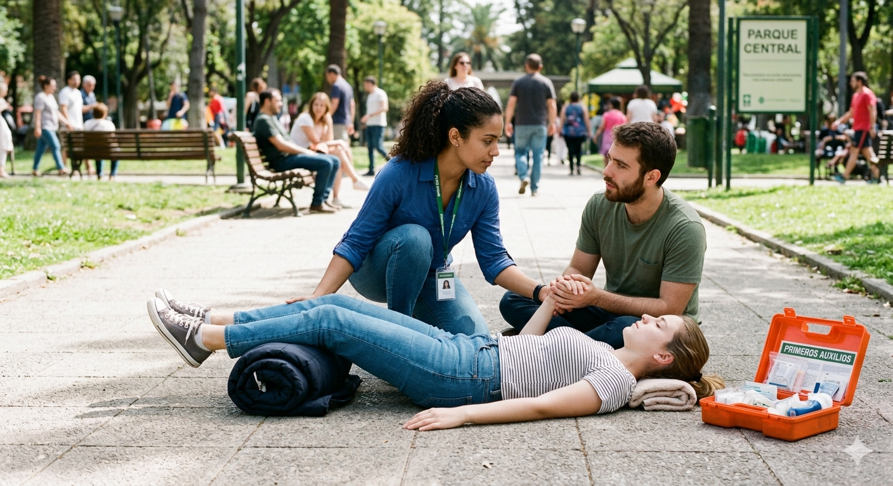

¿Qué hacer en una hemorragia? Aplica presión directa con un paño limpio sobre la herida y eleva la zona si es posible. No retires el paño si se empapa, coloca otro encima.
¿Cómo tratar una quemadura? Enfría la zona con agua durante 10 minutos. No uses hielo ni revientes ampollas. Cubre con gasa limpia.
 ¿Qué hacer en un desmayo? Coloca a la persona acostada y eleva sus piernas. Afloja la ropa y verifica respiración.